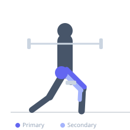
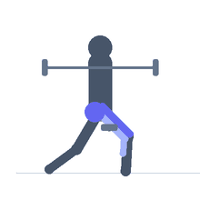

Exercise guide / Forward Walking Lunges — Barbell
Forward Walking Lunges — Barbell
Barbell walking lunges are a compound unilateral exercise performed with a barbell across the upper traps. The lifter steps forward continuously, alternating legs for a set distance or rep count. The barbell adds significantly more load than dumbbells and challenges core stability and balance throughout the movement. The alternating nature trains dynamic single-leg strength and hip flexor flexibility.
Primary muscles
rectus femoris
vastus lateralis
gluteus maximus
Secondary muscles
biceps femoris long head
iliacus
gastrocnemius medial
Stabilizers
gluteus medius
erector spinae
transverse abdominis
Equipment
Standard Barbell


Starting position
- Unrack the barbell from a power rack and position it across the upper traps (similar to a high-bar squat). Stand with feet hip-width apart at the edge of an open space.
Setup
- Set the barbell at an appropriate weight — significantly less than a barbell squat. Ensure you have enough open floor space for the number of lunges planned.
Steps
- Step 1: Step one foot forward into a lunge stance, bending both knees simultaneously.
- Step 2: Lower the rear knee to near the floor while keeping the front shin nearly vertical.
- Step 3: Drive through the front heel to bring the rear foot forward past the front foot, completing one step.
- Step 4: Immediately step the new leading foot forward and repeat on the opposite side.
Coaching cues
- Long step, vertical front shin
- Rear knee drops, don't crash it
- Stand tall with the barbell
Breathing
- Breathe rhythmically — exhale on each drive up.
Range of motion
- Rear knee to approximately 1-2 inches from the floor each step.
Tempo
- Controlled stepping pace — not rushed
Common mistakes
- Step length too short, causing the front shin to angle too far forward
- Leaning the torso to one side under barbell load
- Rear knee crashing to the floor
Safety
- Requires open floor space — ensure the path is clear
- High demand on balance with a barbell — develop with dumbbells first
Training
- strength: 5–8 reps
- hypertrophy: 10–20 reps
- strength: 3–4 sets
- hypertrophy: 3–4 sets
- Rest: {'strength': 120, 'hypertrophy': 90}